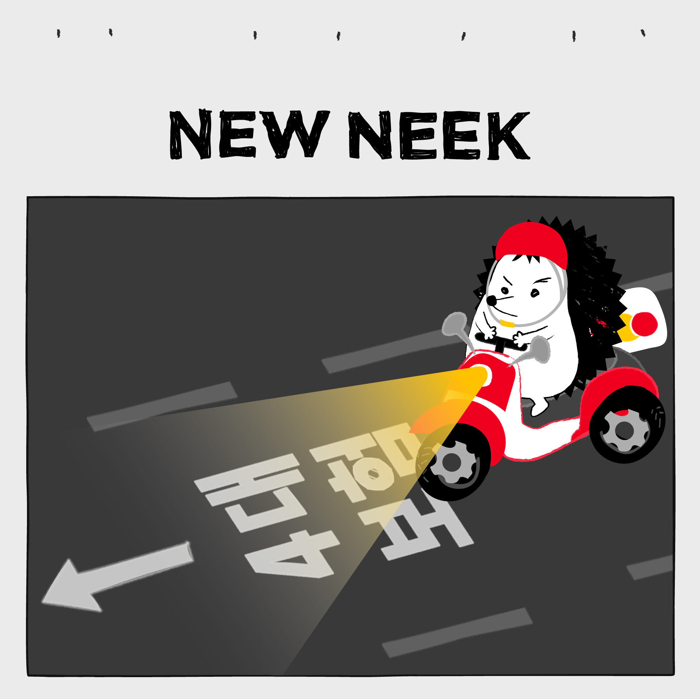
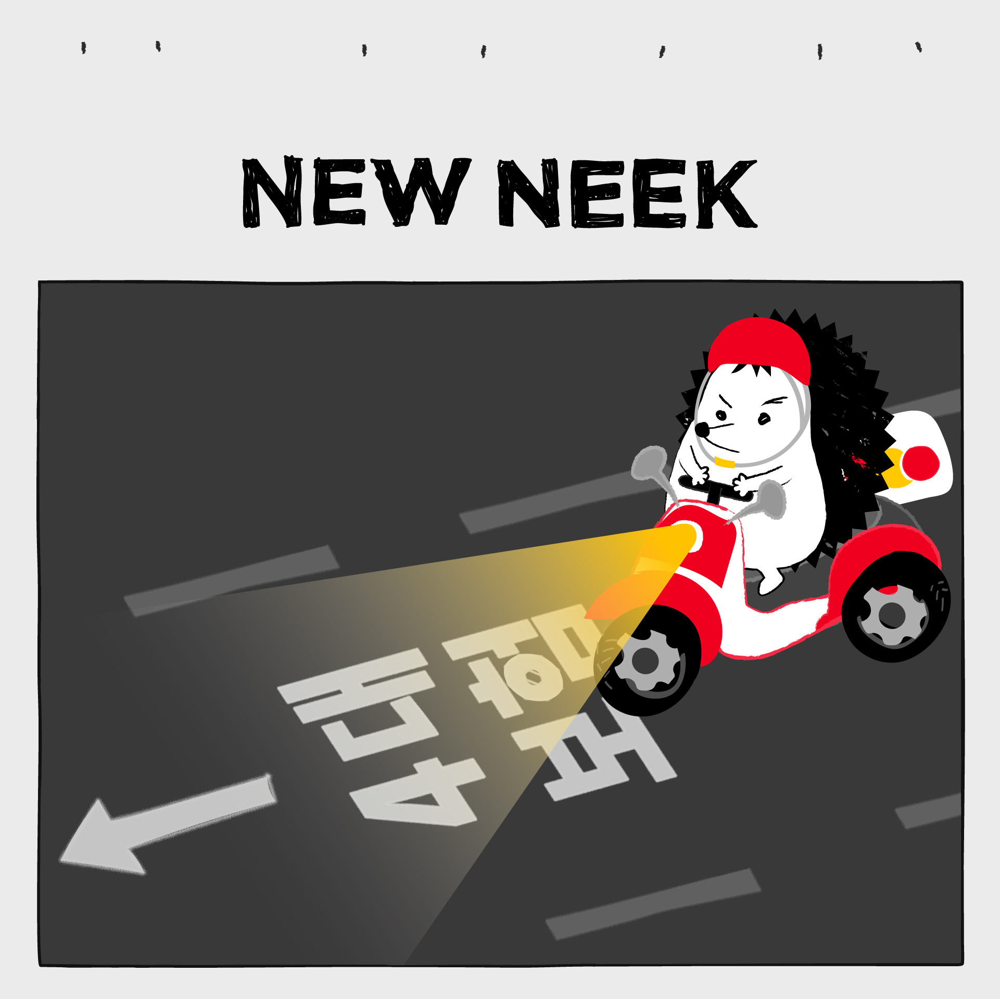

TANZEN IST DIE BESTE MEDIZIN
세계적인 무용가 아그네스 데밀의 말이 기억납니다. "인간을 가장 정직하게 표현하는 것은 바로 그들의 몸과 춤이다. 몸은 절대 거짓말을 하지 않는다."
미래의 어느 날, 여러분 모두와 함께 춤을 추며 댄스 플로어에서 만날 수 있길 희망합니다. 그리고 만약 이 책을 다 읽으시면 한 가지 부탁을 들어 주세요. 사람들에게 널리 알려 주시고, 함께 춤을 추세요!
이 글을 제가 가장 좋아하는 인용구이자, 제 삶의 모토로 마칠까 합니다.
"삶은 풍랑이 지나가길 기다리는 것이 아닙니다. 쏟아지는 빗속에서 춤을 추는 것입니다."
 
